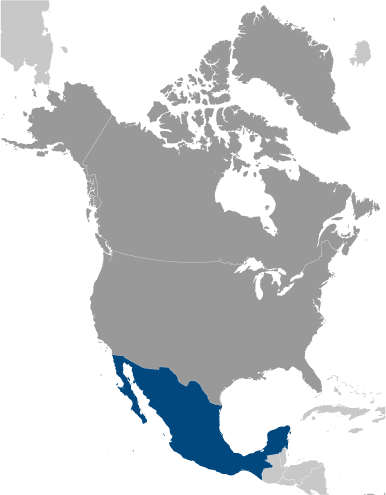
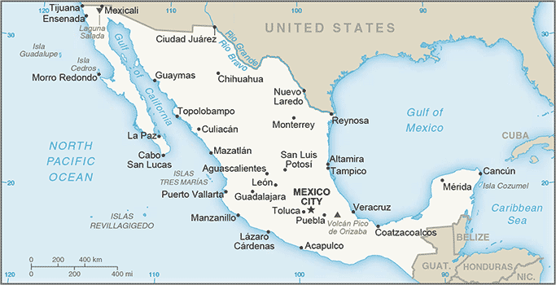
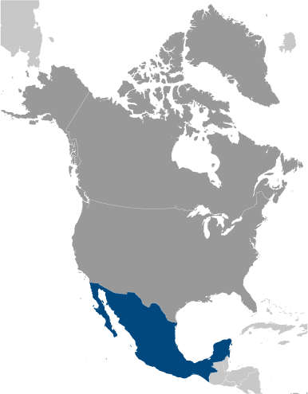
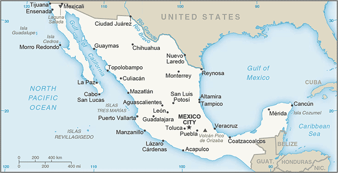

North America :: MEXICO
Introduction :: MEXICO
-
The site of several advanced Amerindian civilizations - including the Olmec, Toltec, Teotihuacan, Zapotec, Maya, and Aztec - Mexico was conquered and colonized by Spain in the early 16th century. Administered as the Viceroyalty of New Spain for three centuries, it achieved independence early in the 19th century. Elections held in 2000 marked the first time since the 1910 Mexican Revolution that an opposition candidate - Vicente FOX of the National Action Party (PAN) - defeated the party in government, the Institutional Revolutionary Party (PRI). He was succeeded in 2006 by another PAN candidate Felipe CALDERON, but Enrique PENA NIETO regained the presidency for the PRI in 2012. The global financial crisis in late 2008 caused a massive economic downturn in Mexico the following year, although growth returned quickly in 2010. Ongoing economic and social concerns include low real wages, high underemployment, inequitable income distribution, and few advancement opportunities for the largely indigenous population in the impoverished southern states. Since 2007, Mexico's powerful drug-trafficking organizations have engaged in bloody feuding, resulting in tens of thousands of drug-related homicides.
Geography :: MEXICO
-
North America, bordering the Caribbean Sea and the Gulf of Mexico, between Belize and the United States and bordering the North Pacific Ocean, between Guatemala and the United States23 00 N, 102 00 WNorth Americatotal: 1,964,375 sq kmland: 1,943,945 sq kmwater: 20,430 sq kmcountry comparison to the world: 15slightly less than three times the size of Texastotal: 4,389 kmborder countries (3): Belize 276 km, Guatemala 958 km, US 3,155 km9,330 kmterritorial sea: 12 nmcontiguous zone: 24 nmexclusive economic zone: 200 nmcontinental shelf: 200 nm or to the edge of the continental marginvaries from tropical to deserthigh, rugged mountains; low coastal plains; high plateaus; desertmean elevation: 1,111 melevation extremes: lowest point: Laguna Salada -10 mhighest point: Volcan Pico de Orizaba 5,636 mpetroleum, silver, copper, gold, lead, zinc, natural gas, timberagricultural land: 54.9%arable land 11.8%; permanent crops 1.4%; permanent pasture 41.7%forest: 33.3%other: 11.8% (2011 est.)65,000 sq km (2012)most of the population is found in the middle of the country between the states of Jalisco and Veracruz; approximately a quarter of the population lives in and around Mexico Citytsunamis along the Pacific coast, volcanoes and destructive earthquakes in the center and south, and hurricanes on the Pacific, Gulf of Mexico, and Caribbean coastsvolcanism: volcanic activity in the central-southern part of the country; the volcanoes in Baja California are mostly dormant; Colima (3,850 m), which erupted in 2010, is Mexico's most active volcano and is responsible for causing periodic evacuations of nearby villagers; it has been deemed a Decade Volcano by the International Association of Volcanology and Chemistry of the Earth's Interior, worthy of study due to its explosive history and close proximity to human populations; Popocatepetl (5,426 m) poses a threat to Mexico City; other historically active volcanoes include Barcena, Ceboruco, El Chichon, Michoacan-Guanajuato, Pico de Orizaba, San Martin, Socorro, and Tacanascarcity of hazardous waste disposal facilities; rural to urban migration; natural freshwater resources scarce and polluted in north, inaccessible and poor quality in center and extreme southeast; raw sewage and industrial effluents polluting rivers in urban areas; deforestation; widespread erosion; desertification; deteriorating agricultural lands; serious air and water pollution in the national capital and urban centers along US-Mexico border; land subsidence in Valley of Mexico caused by groundwater depletionnote: the government considers the lack of clean water and deforestation national security issuesparty to: Biodiversity, Climate Change, Climate Change-Kyoto Protocol, Desertification, Endangered Species, Hazardous Wastes, Law of the Sea, Marine Dumping, Marine Life Conservation, Ozone Layer Protection, Ship Pollution, Wetlands, Whalingsigned, but not ratified: none of the selected agreementsstrategic location on southern border of US; corn (maize), one of the world's major grain crops, is thought to have originated in Mexico
People and Society :: MEXICO
-
124,574,795 (July 2017 est.)country comparison to the world: 11noun: Mexican(s)adjective: Mexicanmestizo (Amerindian-Spanish) 62%, predominantly Amerindian 21%, Amerindian 7%, other 10% (mostly European)note: Mexico does not collect census data on ethnicity (2012 est.)Spanish only 92.7%, Spanish and indigenous languages 5.7%, indigenous only 0.8%, unspecified 0.8%note: indigenous languages include various Mayan, Nahuatl, and other regional languages (2005)Roman Catholic 82.7%, Pentecostal 1.6%, Jehovah's Witness 1.4%, other Evangelical Churches 5%, other 1.9%, none 4.7%, unspecified 2.7% (2010 est.)0-14 years: 26.93% (male 17,155,689/female 16,390,913)15-24 years: 17.54% (male 11,065,927/female 10,778,382)25-54 years: 40.81% (male 24,550,848/female 26,282,836)55-64 years: 7.64% (male 4,362,868/female 5,160,514)65 years and over: 7.09% (male 3,949,823/female 4,876,995) (2017 est.)total dependency ratio: 51.4youth dependency ratio: 41.6elderly dependency ratio: 9.8potential support ratio: 10.2 (2015 est.)total: 28.3 yearsmale: 27.2 yearsfemale: 29.4 years (2017 est.)country comparison to the world: 1331.12% (2017 est.)country comparison to the world: 10318.3 births/1,000 population (2017 est.)country comparison to the world: 945.3 deaths/1,000 population (2017 est.)country comparison to the world: 182-1.8 migrant(s)/1,000 population (2017 est.)country comparison to the world: 157most of the population is found in the middle of the country between the states of Jalisco and Veracruz; approximately a quarter of the population lives in and around Mexico Cityurban population: 79.8% of total population (2017)rate of urbanization: 1.37% annual rate of change (2015-20 est.)MEXICO CITY (capital) 20.999 million; Guadalajara 4.843 million; Monterrey 4.513 million; Puebla 2.984 million; Toluca de Lerdo 2.164 million; Tijuana 1.987 million (2015)at birth: 1.05 male(s)/female0-14 years: 1.05 male(s)/female15-24 years: 1.03 male(s)/female25-54 years: 0.93 male(s)/female55-64 years: 0.85 male(s)/female65 years and over: 0.82 male(s)/femaletotal population: 0.96 male(s)/female (2016 est.)21.3 years (2008 est.)38 deaths/100,000 live births (2015 est.)country comparison to the world: 107total: 11.6 deaths/1,000 live birthsmale: 13 deaths/1,000 live birthsfemale: 10.1 deaths/1,000 live births (2017 est.)country comparison to the world: 125total population: 76.1 yearsmale: 73.3 yearsfemale: 79 years (2017 est.)country comparison to the world: 902.24 children born/woman (2017 est.)country comparison to the world: 9566.9% (2015)6.3% of GDP (2014)country comparison to the world: 1002.07 physicians/1,000 population (2013)1.5 beds/1,000 population (2011)improved:urban: 97.2% of populationrural: 92.1% of populationtotal: 96.1% of populationunimproved:urban: 2.8% of populationrural: 7.9% of populationtotal: 3.9% of population (2015 est.)improved:urban: 88% of populationrural: 74.5% of populationtotal: 85.2% of populationunimproved:urban: 12% of populationrural: 25.5% of populationtotal: 14.8% of population (2015 est.)0.3% (2016 est.)country comparison to the world: 87220,000 (2016 est.)country comparison to the world: 284,200 (2016 est.)country comparison to the world: 33degree of risk: intermediatefood or waterborne diseases: bacterial diarrhea and hepatitis Avectorborne disease: dengue fevernote: active local transmission of Zika virus by Aedes species mosquitoes has been identified in this country (as of August 2016); it poses an important risk (a large number of cases possible) among US citizens if bitten by an infective mosquito; other less common ways to get Zika are through sex, via blood transfusion, or during pregnancy, in which the pregnant woman passes Zika virus to her fetus (2016)28.9% (2016)country comparison to the world: 293.9% (2015)country comparison to the world: 1175.2% of GDP (2012)country comparison to the world: 72definition: age 15 and over can read and writetotal population: 94.5%male: 95.5%female: 93.5% (2015 est.)total: 13 yearsmale: 13 yearsfemale: 13 years (2014)total: 7.7%male: 7.2%female: 8.8% (2016 est.)country comparison to the world: 104
Government :: MEXICO
-
conventional long form: United Mexican Statesconventional short form: Mexicolocal long form: Estados Unidos Mexicanoslocal short form: Mexicoetymology: named after the Mexica, the largest and most powerful branch of the Aztecs; the meaning of the name is uncertainfederal presidential republicname: Mexico City (Ciudad de Mexico)geographic coordinates: 19 26 N, 99 08 Wtime difference: UTC-6 (1 hour behind Washington, DC, during Standard Time)daylight saving time: +1hr, begins first Sunday in April; ends last Sunday in Octobernote: Mexico has four time zones31 states (estados, singular - estado) and 1 city* (ciudad); Aguascalientes, Baja California, Baja California Sur, Campeche, Chiapas, Chihuahua, Coahuila, Colima, Cuidad de Mexico*, Durango, Guanajuato, Guerrero, Hidalgo, Jalisco, Mexico, Michoacan, Morelos, Nayarit, Nuevo Leon, Oaxaca, Puebla, Queretaro, Quintana Roo, San Luis Potosi, Sinaloa, Sonora, Tabasco, Tamaulipas, Tlaxcala, Veracruz, Yucatan, Zacatecas16 September 1810 (declared independence from Spain); 27 September 1821 (recognized by Spain)Independence Day, 16 September (1810)several previous; latest approved 5 February 1917; amended many times, last in 2015 (2016)civil law system with US constitutional law influence; judicial review of legislative actsaccepts compulsory ICJ jurisdiction with reservations; accepts ICCt jurisdictioncitizenship by birth: yescitizenship by descent: yesdual citizenship recognized: not specifiedresidency requirement for naturalization: 5 years18 years of age; universal and compulsorychief of state: President Enrique PENA NIETO (since 1 December 2012); note - the president is both chief of state and head of governmenthead of government: President Enrique PENA NIETO (since 1 December 2012)cabinet: Cabinet appointed by the president; note - appointment of attorney general, the head of the Bank of Mexico, and senior treasury officials require consent of the Senateelections/appointments: president directly elected by simple majority popular vote for a single 6-year term; election last held on 1 July 2012 (next to be held in July 2018)election results: Enrique PENA NIETO elected president; percent of vote - Enrique PENA NIETO (PRI) 38.2%, Andres Manuel LOPEZ OBRADOR (PRD) 31.6%, Josefina Eugenia VAZQUEZ Mota (PAN) 25.4%, other 4.8%description: bicameral National Congress or Congreso de la Union consists of the Senate or Camara de Senadores (128 seats; 96 members directly elected in multi-seat constituencies by simple majority vote and 32 directly elected in a single, nationwide constituency by proportional representation vote; members serve 6-year terms) and the Chamber of Deputies or Camara de Diputados (500 seats; 300 members directly elected in single-seat constituencies by simple majority vote and 200 directly elected in a single, nationwide constituency by proportional representation vote; members serve 3-year terms)note: for the 2018 elections, senators will be eligible for a second term and deputies up to 4 consecutive termselections: Senate - last held on 1 July 2012 (next to be held on 1 July 2018); Chamber of Deputies - last held on 7 June 2015 (next to be held on 1 July 2018)election results: Senate - percent of vote by party - NA; seats by party - PRI 52, PAN 38, PRD 22, PVEM 9, PT 4, MC 2, PANAL 1;Chamber of Deputies - percent of vote by party - NA; seats by party - PRI 203, PAN 108, PRD 56, PVEM 47, MORENA 35, MC 26, PANAL 10, PES 8, PT 6, independent 1highest court(s): Supreme Court of Justice or Suprema Corte de Justicia de la Nacion (consists of the chief justice and 11 justices and organized into civil, criminal, administrative, and labor panels) and the Electoral Tribunal of the Federal Judiciary (organized into the superior court, with 7 judges including the court president and 5 regional courts, each with 3 judges)judge selection and term of office: Supreme Court justices nominated by the president of the republic and approved by two-thirds vote of the members present in the Senate; justices serve for life; Electoral Tribunal superior and regional court judges nominated by the Supreme Court and elected by two-thirds vote of members present in the Senate; superior court president elected from among its members to hold office for a 4-year term; other judges of the superior and regional courts serve staggered, 9-year termssubordinate courts: federal level includes circuit, collegiate, and unitary courts; state and district level courtsCitizen's Movement (Movimiento Ciudadano) or MC [Dante DELGADO Rannaoro]Institutional Revolutionary Party (Partido Revolucionario Institucional) or PRI [Enrique OCHOA Reza]Labor Party (Partido del Trabajo) or PT [Alberto ANAYA Gutierrez]Mexican Green Ecological Party (Partido Verde Ecologista de Mexico) or PVEM [Carlos Alberto PUENTE Salas]Movement for National Regeneration (Movimiento Regeneracion Nacional) or MORENA [Andres Manuel LOPEZ Obrador]National Action Party (Partido Accion Nacional) or PAN [Ricardo ANAYA Cortes]New Alliance Party (Partido Nueva Alianza) or PNA/PANAL [Luis CASTRO Obregon]Party of the Democratic Revolution (Partido de la Revolucion Democratica) or PRD [Alejandra BARRALES Magdaleno]Social Encounter Party (Partido Encuentro Social) or PES [Hugo Eric FLORES Cervantes]Businessmen's Coordinating Council or CCEConfederation of Employers of the Mexican Republic or COPARMEXConfederation of Industrial Chambers or CONCAMINConfederation of Mexican Workers or CTMConfederation of National Chambers of Commerce or CONCANACOCoordinator for Foreign Trade Business Organizations or COECEFederation of Unions Providing Goods and Services or FESEBESNational Chamber of Transformation Industries or CANACINTRANational Confederation of Popular Organizations or CNOPNational Coordinator for Education Workers or CNTENational Peasant Confederation or CNCNational Small Business Chamber or CANACOPENational Syndicate of Education Workers or SNTENational Union of Workers or UNTPopular Assembly of the People of Oaxaca or APPORoman Catholic ChurchAPEC, Australia Group, BCIE, BIS, CAN (observer), Caricom (observer), CD, CDB, CE (observer), CELAC, CSN (observer), EBRD, FAO, FATF, G-3, G-15, G-20, G-24, G-5, IADB, IAEA, IBRD, ICAO, ICC (national committees), ICCt, ICRM, IDA, IFAD, IFC, IFRCS, IHO, ILO, IMF, IMO, IMSO, Interpol, IOC, IOM, IPU, ISO, ITSO, ITU, ITUC (NGOs), LAES, LAIA, MIGA, NAFTA, NAM (observer), NEA, NSG, OAS, OECD, OPANAL, OPCW, Pacific Alliance, Paris Club (associate), PCA, SICA (observer), UN, UNASUR (observer), UNCTAD, UNESCO, UNHCR, UNIDO, Union Latina (observer), UNWTO, UPU, WCO, WFTU (NGOs), WHO, WIPO, WMO, WTOchief of mission: Ambassador Geronimo GUTIERREZ Fernandez (since 24 April 2017)chancery: 1911 Pennsylvania Avenue NW, Washington, DC 20006telephone: [1] (202) 728-1600FAX: [1] (202) 728-1698consulate(s) general: Atlanta, Austin, Boston, Chicago, Dallas, Denver, El Paso (TX), Houston, Laredo (TX), Los Angeles, Miami, New York, Nogales (AZ), Phoenix, Sacramento (CA), San Antonio (TX), San Diego, San Francisco, San Jose (CA), San Juan (Puerto Rico), Saint Paul (MN)consulate(s): Albuquerque (NM), Anchorage (AK), Boise (ID), Brownsville (TX), Calexico (CA), Del Rio (TX), Detroit, Douglas (AZ), Eagle Pass (TX), Fresno (CA), Indianapolis (IN), Kansas City (MO), Las Vegas, Little Rock (AR), McAllen (TX), Minneapolis (MN), New Orleans, Omaha (NE), Orlando (FL), Oxnard (CA), Philadelphia, Portland (OR), Presidio (TX), Raleigh (NC), Salt Lake City, San Bernardino (CA), Santa Ana (CA), Seattle, Tucson (AZ), Yuma (AZ); note - Washington DC Consular Section is located in a separate building from the Mexican Embassy and has jurisdiction over DC, parts of Virginia, Maryland, and West Virginiachief of mission: Ambassador Roberta JACOBSON (since 20 June 2016)embassy: Paseo de la Reforma 305, Colonia Cuauhtemoc, 06500 Mexico, Distrito Federalmailing address: P. O. Box 9000, Brownsville, TX 78520-9000telephone: (01-55) 5080-2000FAX: (01-55) 5080-2005consulate(s) general: Ciudad Juarez, Guadalajara, Hermosillo, Matamoros, Merida, Monterrey, Nogales, Nuevo Laredo, Tijuanathree equal vertical bands of green (hoist side), white, and red; Mexico's coat of arms (an eagle with a snake in its beak perched on a cactus) is centered in the white band; green signifies hope, joy, and love; white represents peace and honesty; red stands for hardiness, bravery, strength, and valor; the coat of arms is derived from a legend that the wandering Aztec people were to settle at a location where they would see an eagle on a cactus eating a snake; the city they founded, Tenochtitlan, is now Mexico Citynote: similar to the flag of Italy, which is shorter, uses lighter shades of red and green, and does not display anything in its white bandgolden eagle; national colors: green, white, redname: "Himno Nacional Mexicano" (National Anthem of Mexico)lyrics/music: Francisco Gonzalez BOCANEGRA/Jaime Nuno ROCAnote: adopted 1943, in use since 1854; also known as "Mexicanos, al grito de Guerra" (Mexicans, to the War Cry); according to tradition, Francisco Gonzalez BOCANEGRA, an accomplished poet, was uninterested in submitting lyrics to a national anthem contest; his fiancee locked him in a room and refused to release him until the lyrics were completed
Economy :: MEXICO
-
Mexico's $2.2 trillion economy has become increasingly oriented toward manufacturing since the North American Free Trade Agreement (NAFTA) entered into force in 1994. Per capita income is roughly one-third that of the US; income distribution remains highly unequal.Mexico has become the US' second-largest export market and third-largest source of imports. In 2016, two-way trade in goods and services exceeded $579 billion. Mexico has free trade agreements with 46 countries, putting more than 90% of trade under free trade agreements. In 2012, Mexico formed the Pacific Alliance with Peru, Colombia, and Chile.Mexico's current government, led by President Enrique PENA NIETO, has emphasized economic reforms, passing and implementing sweeping energy, financial, fiscal, and telecommunications reform legislation, among others, with the long-term aim to improve competitiveness and economic growth across the Mexican economy. Mexico began holding public auctions of exploration and development rights to select oil and gas resources in 2015 as a part of reforms that allow for private investment in the oil, gas, and electricity sectors. Mexico held its fourth auction in December 2016 and allocated 8 of 10 deepwater fields, demonstrating Mexico’s capacity to attract investment amid low oil prices. The government will allocate additional fields in 2017.Since 2013, Mexico’s economic growth has averaged 2% annually, falling short of private-sector expectations that President PENA NIETO’s sweeping reforms would bolster economic prospects. Growth is predicted to remain below potential given falling oil production, weak oil prices, structural issues such as low productivity, high inequality, a large informal sector employing over half of the workforce, weak rule of law, and corruption. Over the medium-term, the economy is vulnerable to global economic pressures, such as lower external demand, rising interest rates, and low oil prices - approximately 10% of government revenue comes from the state-owned oil company, PEMEX.$2.315 trillion (2016 est.)$2.235 trillion (2015 est.)$2.154 trillion (2014 est.)note: data are in 2016 dollarscountry comparison to the world: 12$1.047 trillion (2016 est.)2.3% (2016 est.)2.7% (2015 est.)2.3% (2014 est.)country comparison to the world: 123$18,900 (2016 est.)$18,700 (2015 est.)$18,400 (2014 est.)note: data are in 2016 dollarscountry comparison to the world: 9021.1% of GDP (2016 est.)20.4% of GDP (2015 est.)19.8% of GDP (2014 est.)country comparison to the world: 82household consumption: 68.3%government consumption: 12.2%investment in fixed capital: 22.8%investment in inventories: -1.5%exports of goods and services: 38.1%imports of goods and services: -39.9% (2016 est.)agriculture: 3.8%industry: 32.2%services: 63.4% (2016 est.)corn, wheat, soybeans, rice, beans, cotton, coffee, fruit, tomatoes; beef, poultry, dairy products; wood productsfood and beverages, tobacco, chemicals, iron and steel, petroleum, mining, textiles, clothing, motor vehicles, consumer durables, tourism0% (2016 est.)country comparison to the world: 15853.68 million (2016 est.)country comparison to the world: 13agriculture: 13.4%industry: 24.1%services: 61.9% (2011)3.9% (2016 est.)4.4% (2015 est.)note: underemployment may be as high as 25%country comparison to the world: 4446.2%note: from a food-based definition of poverty; asset-based poverty amounted to more than 47% (2014 est.)lowest 10%: 2%highest 10%: 40% (2014)48.2 (2014)48.3 (2008)country comparison to the world: 24revenues: $259.6 billionexpenditures: $286.5 billion (2016 est.)24.8% of GDP (2016 est.)country comparison to the world: 119-2.6% of GDP (2016 est.)country comparison to the world: 10550.2% of GDP (2016 est.)47.3% of GDP (2015 est.)country comparison to the world: 98calendar year2.8% (2016 est.)2.7% (2015 est.)country comparison to the world: 1416.25% (28 February 2017)5.25% (28 February 2016)country comparison to the world: 664.72% (31 December 2016 est.)3.42% (31 December 2015 est.)country comparison to the world: 148$186.8 billion (31 December 2016 est.)$194.8 billion (31 December 2015 est.)country comparison to the world: 25$603 billion (31 December 2016 est.)$656.8 billion (31 December 2015 est.)country comparison to the world: 20$393.8 billion (31 December 2016 est.)$398.9 billion (31 December 2015 est.)country comparison to the world: 29$402.3 billion (31 December 2015 est.)$480.2 billion (31 December 2014 est.)$526 billion (31 December 2013 est.)country comparison to the world: 26$-22.97 billion (2016 est.)$-28.2 billion (2015 est.)country comparison to the world: 192$374.3 billion (2016 est.)$381 billion (2015 est.)country comparison to the world: 13manufactured goods, oil and oil products, silver, fruits, vegetables, coffee, cottonUS 81% (2016)$387.4 billion (2016 est.)$395.6 billion (2015 est.)country comparison to the world: 12metalworking machines, steel mill products, agricultural machinery, electrical equipment, automobile parts for assembly and repair, aircraft, aircraft partsUS 46.6%, China 18%, Japan 4.6% (2016)$178.4 billion (31 December 2016 est.)$178 billion (31 December 2015 est.)note: Mexico also maintains access to an $88 million Flexible Credit Line with the IMFcountry comparison to the world: 14$450.2 billion (31 December 2016 est.)$426.3 billion (31 December 2015 est.)country comparison to the world: 27$473.5 billion (31 December 2016 est.)$509.3 billion (31 December 2015 est.)country comparison to the world: 17$148.6 billion (31 December 2016 est.)$146.4 billion (31 December 2015 est.)country comparison to the world: 30Mexican pesos (MXN) per US dollar -18.664 (2016 est.)18.664 (2015 est.)15.848 (2014 est.)13.292 (2013 est.)13.17 (2012 est.)
Energy :: MEXICO
-
population without electricity: 1,231,667electrification - total population: 99%electrification - urban areas: 100%electrification - rural areas: 97% (2012)292.7 billion kWh (2015 est.)country comparison to the world: 14245.2 billion kWh (2015 est.)country comparison to the world: 167.308 billion kWh (2016 est.)country comparison to the world: 28392 million kWh (2016 est.)country comparison to the world: 8665.45 million kW (2016 est.)country comparison to the world: 1972.2% of total installed capacity (2015 est.)country comparison to the world: 992.1% of total installed capacity (2015 est.)country comparison to the world: 2718.1% of total installed capacity (2015 est.)country comparison to the world: 968.5% of total installed capacity (2015 est.)country comparison to the world: 752.187 million bbl/day (2016 est.)country comparison to the world: 121.224 million bbl/day (2016 est.)country comparison to the world: 150 bbl/day (2016 est.)country comparison to the world: 1667.64 billion bbl (1 January 2017 es)country comparison to the world: 191.043 million bbl/day (2016 est.)country comparison to the world: 192.027 million bbl/day (2016 est.)country comparison to the world: 12181,600 bbl/day (2016 est.)country comparison to the world: 34751,500 bbl/day (2016 est.)country comparison to the world: 1140.37 billion cu m (2015 est.)country comparison to the world: 21418.9 billion cu m (2015 est.)country comparison to the world: 431 million cu m (2015 est.)country comparison to the world: 5236.47 billion cu m (2015 est.)country comparison to the world: 12355.7 billion cu m (1 January 2017 es)country comparison to the world: 36455 million Mt (2013 est.)country comparison to the world: 15
Communications :: MEXICO
-
total subscriptions: 19,599,886subscriptions per 100 inhabitants: 16 (July 2016 est.)country comparison to the world: 14total: 111,724,654subscriptions per 100 inhabitants: 91 (July 2016 est.)country comparison to the world: 14general assessment: adequate telephone service for business and government; improving quality and increasing mobile cellular availability, with mobile subscribers far outnumbering fixed-line subscribers; domestic satellite system with 120 earth stations; extensive microwave radio relay network; considerable use of fiber-optic cable and coaxial cabledomestic: competition has spurred the mobile-cellular market; fixed-line teledensity exceeds 15 per 100 persons; mobile-cellular teledensity is about 90 per 100 personsinternational: country code - 52; Columbus-2 fiber-optic submarine cable with access to the US, Virgin Islands, Canary Islands, Spain, and Italy; the Americas Region Caribbean Ring System (ARCOS-1) and the MAYA-1 submarine cable system together provide access to Central America, parts of South America and the Caribbean, and the US; satellite earth stations - 120 (32 Intelsat, 2 Solidaridad (giving Mexico improved access to South America, Central America, and much of the US as well as enhancing domestic communications), 1 Panamsat, numerous Inmarsat mobile earth stations); linked to Central American Microwave System of trunk connections (2016)many TV stations and more than 1,400 radio stations with most privately owned; the Televisa group once had a virtual monopoly in TV broadcasting, but new broadcasting groups and foreign satellite and cable operators are now available (2012).mxtotal: 73,334,032percent of population: 59.5% (July 2016 est.)country comparison to the world: 12
Transportation :: MEXICO
-
number of registered air carriers: 21inventory of registered aircraft operated by air carriers: 357annual passenger traffic on registered air carriers: 45,560,063annual freight traffic on registered air carriers: 713,985,467 mt-km (2015)XA (2016)1,714 (2013)country comparison to the world: 3total: 243over 3,047 m: 122,438 to 3,047 m: 321,524 to 2,437 m: 80914 to 1,523 m: 86under 914 m: 33 (2017)total: 1,471over 3,047 m: 12,438 to 3,047 m: 11,524 to 2,437 m: 42914 to 1,523 m: 281under 914 m: 1,146 (2013)1 (2013)gas 18,074 km; liquid petroleum 2,102 km; oil 8,775 km; oil/gas/water 369 km; refined products 7,565 km; water 123 km (2013)total: 15,389 kmstandard gauge: 15,389 km 1.435-m gauge (27 km electrified) (2014)country comparison to the world: 18total: 377,660 kmpaved: 137,544 km (includes 7,176 km of expressways)unpaved: 240,116 km (2012)country comparison to the world: 202,900 km (navigable rivers and coastal canals mostly connected with ports on the country's east coast) (2012)country comparison to the world: 33total: 52by type: bulk carrier 5, cargo 3, chemical tanker 11, liquefied gas 3, passenger/cargo 10, petroleum tanker 17, roll on/roll off 3foreign-owned: 5 (France 1, Greece 2, South Africa 1, UAE 1)registered in other countries: 12 (Antigua and Barbuda 1, Marshall Islands 2, Panama 5, Portugal 1, Spain 1, Venezuela 1, unknown 1) (2010)country comparison to the world: 71major seaport(s): Altamira, Coatzacoalcos, Lazaro Cardenas, Manzanillo, Veracruzcontainer port(s) (TEUs): Manzanillo (1,992,176), Lazaro Cardenas (1,242,777) (2012)oil terminal(s): Cayo Arcas terminal, Dos Bocas terminalLNG terminal(s) (import): Altamira, Ensenadacruise port(s): Cancun, Cozumel, Ensenada
Military and Security :: MEXICO
-
0.58% of GDP (2016)0.67% of GDP (2015)0.67% of GDP (2014)0.62% of GDP (2013)0.59% of GDP (2012)country comparison to the world: 124Secretariat of National Defense (Secretaria de Defensa Nacional, Sedena): Army (Ejercito), Mexican Air Force (Fuerza Aerea Mexicana, FAM); Secretariat of the Navy (Secretaria de Marina, Semar): Mexican Navy (Armada de Mexico (ARM); includes Naval Air Force (FAN), Mexican Naval Infantry Corps (Cuerpo de Infanteria de Marina, Mexmar or CIM)) (2013)18 years of age for compulsory military service, conscript service obligation is 12 months; 16 years of age with consent for voluntary enlistment; conscripts serve only in the Army; Navy and Air Force service is all voluntary; women are eligible for voluntary military service; cadets enrolled in military schools from the age of 15 are considered members of the armed forces (2012)
Transnational Issues :: MEXICO
-
abundant rainfall in recent years along much of the Mexico-US border region has ameliorated periodically strained water-sharing arrangements; the US has intensified security measures to monitor and control legal and illegal personnel, transport, and commodities across its border with Mexico; Mexico must deal with thousands of impoverished Guatemalans and other Central Americans who cross the porous border looking for work in Mexico and the US; Belize and Mexico are working to solve minor border demarcation discrepancies arising from inaccuracies in the 1898 border treatyIDPs: 311,000 (government's quashing of Zapatista uprising in 1994 in eastern Chiapas Region; drug cartel violence and government's military response since 2007; violence between and within indigenous groups) (2016)stateless persons: 13 (2016)major drug-producing and transit nation; Mexico is estimated to be the world's third largest producer of opium with poppy cultivation in 2015 estimated to be 28,000 hectares yielding a potential production of 475 metric tons of raw opium; government conducts the largest independent illicit-crop eradication program in the world; continues as the primary transshipment country for US-bound cocaine from South America, with an estimated 95% of annual cocaine movements toward the US stopping in Mexico; major drug syndicates control the majority of drug trafficking throughout the country; producer and distributor of ecstasy; significant money-laundering center; major supplier of heroin and largest foreign supplier of marijuana and methamphetamine to the US market